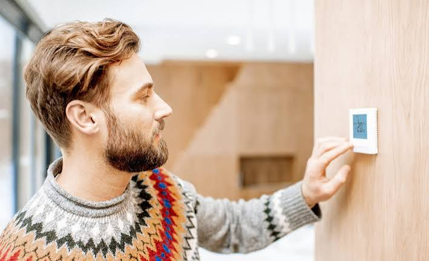
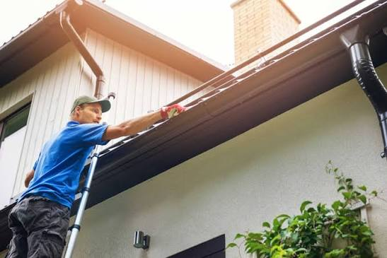
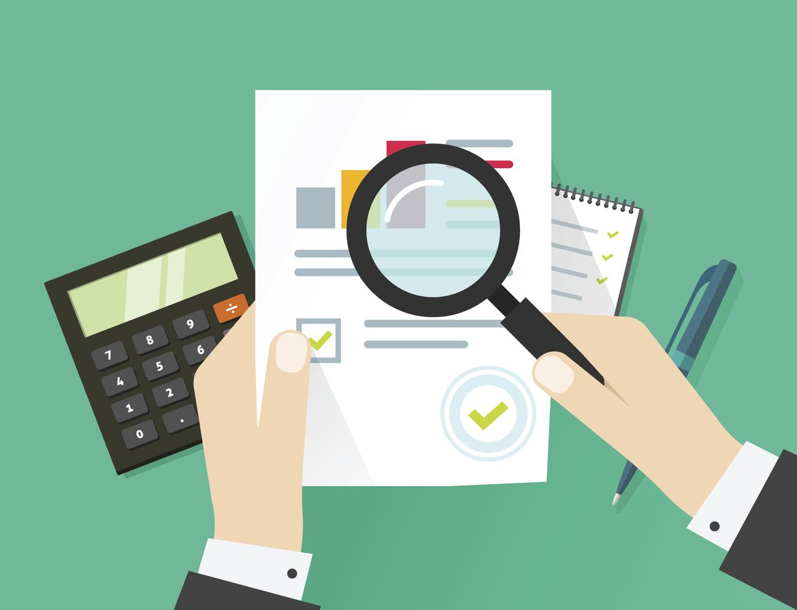
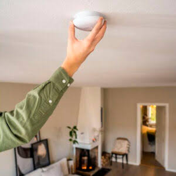

Bolig Tips
Tips til strømsparing
- Senk innetemperaturen litt – Oppvarming står ofte for en stor del av strøforbruket i en bolig. Ved å senke temperaturen med én eller to grader kan man spare strøm uten at det nødvendigvis blir ukomfortabelt.
- Slå av lys i rom du ikke bruker – Det er lett å la lys stå på unødvendig. Ved å slå av lyset når du går ut av et rom, og bruk av LED-pærer, kan du redusere strømforbruket.
- Bruk mindre varmt vann – Oppvarming av vann krever mye energi. Kortere dusjer og det å unngå å la varmt vann renne unødvendig kan derfor gi god strømsparing.
- Fyll opp vaskemaskin og oppvaskmaskin – Det er mer energieffektivt å kjøre fulle maskiner enn flere halvfulle. Da får du vaska mer med omtrent samme mengde strøm og vatn.
- Tett rundt vinduer og dører – Dersom kald luft kommer inn gjennom sprekker, må oppvarmingen jobbe mer for å holde huset varmt. Tetningslister kan være en enkel og billig måte å redusere varmetap på.


Tips til vedlikehooligen
- Sjekk taket jevnlig – Taket beskytter huset mot regn, snø og vind. Det er derfor lurt å sjekke etter løse eller ødelagt takstein og andre skader, spesielt etter dårlig vær.
- Kontroller vinduer og dører – Vinduer og dører kan bli slitte over tid. Sjekk om de er tette, om listene er hele, og om det kommer inn trekk eller fukt.
- Følg med på fukt og mugg – Fukt kan føre til store skader dersom det ikke blir oppdaget tidlig. Se etter misfarging, lukt eller fuktige områder på bad, kjøkken, kjeller og rundt vinduer.
- Vedlikehold ute – Fasade, terrasse og andre utvendige deler bør vaskes og behandles med jevne mellomrom. Maling eller beis kan beskytte treverket mot vær og råte.
- Ta små skader tidlig – En liten sprekk, lekkasje eller skade er ofte mye billigere og enklere å reparere tidlig enn dersom du venter til problemet blir større.
Tips til økonomi og budsjett
- Lag et fast budsjett – Det er lurt å ha oversikt over alle faste utgifter som lån, strøm, forsikring, kommunale avgifter og internett. Da blir det enklere å vite hvor mye penger du faktisk har til overs hver måned.
- Ta vare på boligen – Godt vedlikehold kan spare deg for store kostnader seinere. Små problem er ofte mye billigare å fikse før de utvikler seg til større skader.
- Ha riktige forsikringer – Husforsikring og innbuforsikring kan beskytte deg mot store økonomiske tap ved for eksempel brann, vannkade eller innbrudd. Det er viktig å sjekke hva forsikringen faktisk dekker.
- Spar litt hver måned – Ved å sette av et fast beløp hver måned kan du bygge opp en buffer til vedlikehold, reparasjoner eller framtidige oppgraderinger av boligen.
- Planlegg større innkjøp – Nye møbler, hvitevarer og oppussing kan bli dyrt. Det kan vere lurt å spare opp penger på forhånd i stedet for å kjøpe alt med en gang.


Tips til trygghet i boligen
- Ha fungerende røykvarslere – Røykvarslere kan varsle deg tidlig dersom det begynner å brenne. De bør testes jevnlig, og batteriene må byttes når det er nødvendig.
- Pass på elektriske apparat – Gamle ledninger, skada kontakter og overbelastede stikkontakter kan føre til brannfare. Det er derfor viktig å sjekke at elektrisk utstyr er i god stand.
- Oppbevar farlige produkt trygt – Rengjøringsmiddel, kjemikalier og medisiner bør oppbevares på en trygg plass, spesielt dersom det bor barn i huset.
- Lås dører og vinduer – Gode låser på dører og vinduer reduserer risikoen for innbrudd. Det er spesielt viktig å sjekke dette når du reiser bort.
- Sjekk varmtvannsbereder og rør – Lekkasjer kan føre til store vannkader. Det er derfor viktig å følge med på rør, koblinger og berederen.